About theclinic
A dental centre for the whole family, in the heart of Al Ain.

We want to change the way people feel about going to the dentist.
Akil Clinic is a boutique dental centre on Khalifa Street, run to international standards. We make patients feel at home, and we do everything we can so that every patient leaves satisfied and smiling.
Each treatment room is furnished with the latest equipment, chosen from the most reputable brands and international suppliers, so our dentists and technicians can do consistently good work.
Our philosophy is simple: help patients have healthy teeth and gums and a good-looking smile, in a minimally invasive way. We choose the methods that are most advanced and least destructive, to keep as much of the natural tooth as possible.
The team offers a full range of restorative and cosmetic treatment: porcelain crowns and bridges, veneers and smile makeovers, dental implants, root canal treatment, gum treatment, teeth whitening, white fillings, wisdom teeth removal, sedation dentistry and more. See all treatments

Dr. Mohamed Akil, DDS
Certified Oral Implantologist. Member of the American Academy of Implant Dentistry (AAID).
Dr. Akil has practised general and cosmetic dentistry in Al Ain and the Northern Emirates. Earlier he was a faculty member at the Department of General Dentistry, School of Dentistry, Ajman University of Science and Technology (AUST) for more than five years, where he supervised over 300 pre-doctoral dental students.
His approach combines the art and science of cosmetic dentistry. His treatment plans are comprehensive, and always weigh up the options that are best for the patient. He keeps up with continuing education, with an emphasis on cosmetic and implant dentistry.
He has volunteered in a community oral health programme for primary school children and in the Labour Camp Oral Health Programme, giving free dental care to patients in need. Away from the clinic: photography and fitness.
- 2007Doctor of Dental Surgery (D.D.S.), AUST School of Dentistry, Ajman
- 2007–08Clinical internship programme in general dentistry, AUST
- 2011Postdoctoral clinical fellowship in implant dentistry, AAID MaxiCourse®
- 2012Member of the American Academy of Implant Dentistry
- 5+ yearsFaculty, Department of General Dentistry, AUST
- CoursesAdvanced cosmetic and reconstructive dentistry; conscious sedation for paediatric and adult patients
Mission, vision & values
Mission
- Raise the standard of dental care by focusing on the patient's experience: personal, conservative treatment with real service.
- Work as a team of experienced, caring providers towards one goal: a pleasant visit and a good clinical result.
- Give comprehensive care in a friendly setting, with modern equipment and advanced techniques.
- Work with dental universities to share resources and raise awareness of preventive care.
Vision
To be one of the leading, most trusted dental centres in the region, with the highest standards of dental and oral care for the Al Ain community and the GCC.
Values
We talk openly and honestly, with each other and with our patients. We listen to understand your needs, worries and choices, and we keep improving our skills, systems and care so you can trust us for the long term.
Come and see us
Khalifa St. 18736, Al Ain. Saturday to Thursday, 9am to 9pm.